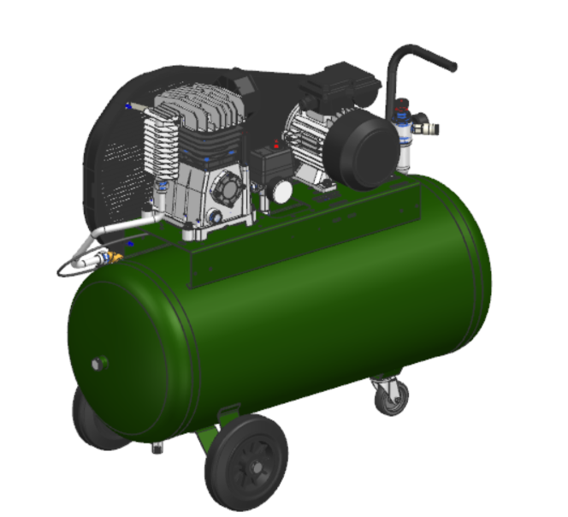
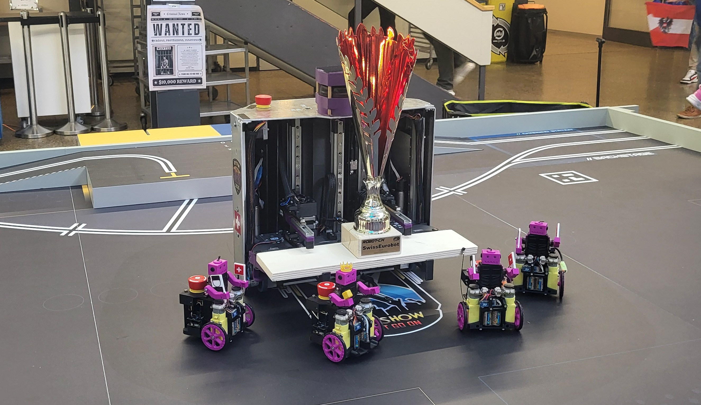
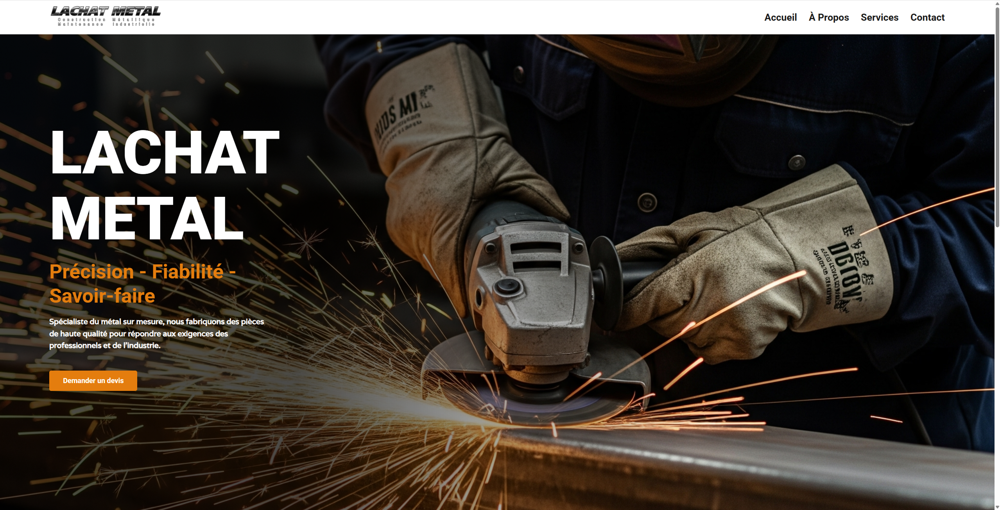
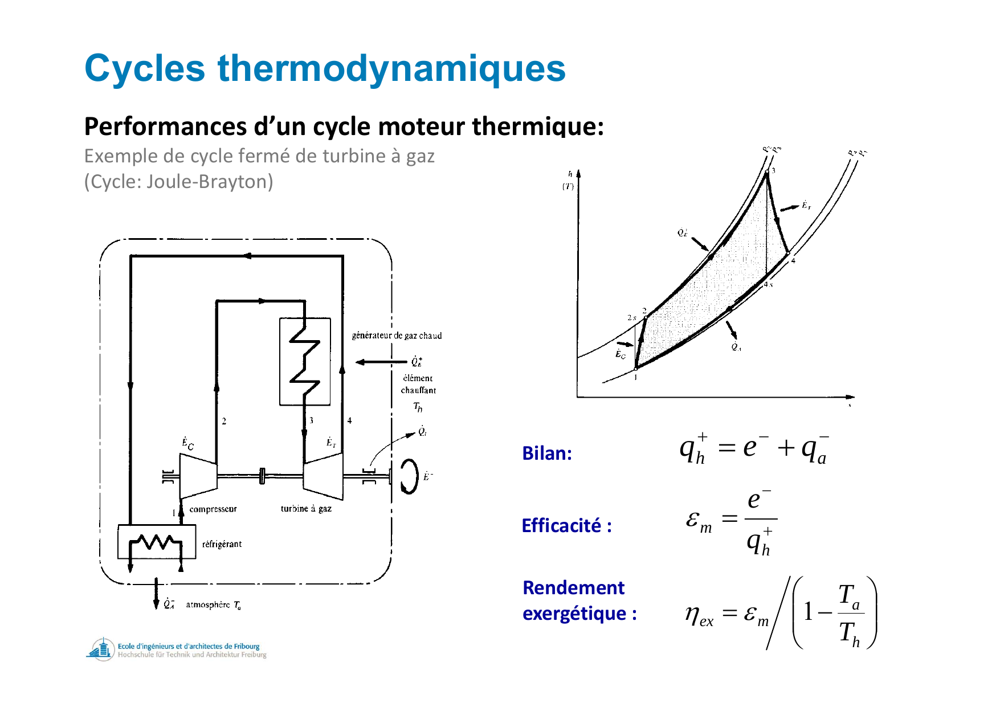
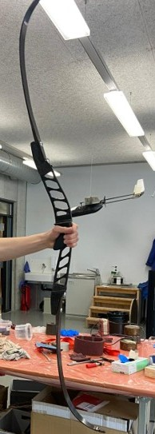
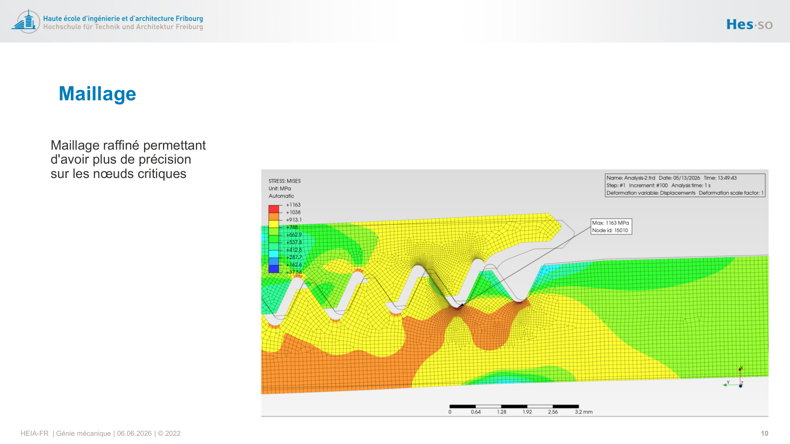

2023 – Présent
Bachelor Génie Mécanique — HEIA-FR
Cursus bilingue français-allemand à la Haute École d'Ingénierie et d'Architecture de Fribourg. Projets et compétences couvrant la mécanique, l'électronique, la programmation, le web et l'énergétique.
Compétences acquises
Cliquez sur une case pour afficher toutes les informations.

Siemens NX
Modélisation 3D
Rétro-ingénierie d'un Compresseur
Voir le projet →
Robotique
Électronique
Robotique Eurobot
Voir le projet →
HTML/CSS
Web
Site Web Lachat Métal
Voir le projet →
Plasturgie
Moldflow
Conception Plastique
Voir le projet →
Analytique
FEM
Expérimental
Analyse modale
Vibrométrie laser
FEM · Nastran
Dynamique & Vibrations — Analyse modale
Voir le projet →
Thermodynamique
Transfert de chaleur
Énergie
Voir le projet →
Composites
Fibres / Matrice
Matériaux Composites
Voir le projet →
Éléments finis
FKM · Fatigue
Optimisation
Simulation FEM — Analyses de structure
Voir le projet →
🏭
Lean
Amélioration continue